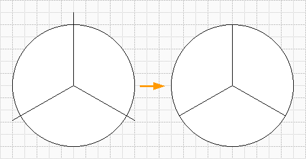

Методы создания растровой прозрачности векторных фигур.
 Начиная с Visio 2002, появилась возможность использовать в качестве заливки фигур, растровые изображения. Рассмотрим приемы использования данной возможности на примере диаграммы.
Начиная с Visio 2002, появилась возможность использовать в качестве заливки фигур, растровые изображения. Рассмотрим приемы использования данной возможности на примере диаграммы.
Рассмотрим первый способ.
Для начала создадим диаграмму.
Для создания такой фигуры надо выбрать инструмент черчения окружности (Ctrl+9) и начертить круг, зажав клавишу Shift.
Далее выбираем инструмент линии и делим линией круг, как показано на рисунке. Теперь в меню выбираем Фигура>Операции>Фрагментация. Получилось 3 фигуры.

Далее создаем 3 новых узора заливки. Отметив в окне, в пункте "Поведение" самый правый значок.
Открываем узоры для редактирования и делаем вставку рисунка Вставка>Рисунок…>Из файла… и выбираем какой-либо файл и закрываем узор соглашаясь на обновление. Затем повторяем операцию для других 2-х узоров.
Теперь для каждой из секторов выбираем в меню Формат>Заливка и назначаем название созданного узора заливки и получаем более информативную диаграмму.
Останется только расставить надписи. Недостатком этого способа можно считать необходимость высчитывания площади сегмента “на глаз”.
Теперь рассмотрим второй способ.
Для этого надо открыть трафарет Charting shapes и переместить на лист мастер Pie Chart.
Для этого примера тоже создадим 3 узора заливки (хотя их может быть больше) и внесем изменения в размеры сегментов (нажать правой кнопкой мыши на фигуре). Теперь вырезаем эту фигуру (Ctrl+X) и делаем специальную вставку как Рисунок (Расширенный метафайл).
Затем выбираем инструмент вращения (Ctrl+0) и поворачиваем. Далее разгруппируем эту фигуру (Ctrl+Shift+U), и удаляем ненужные элементы.
Теперь для каждой получившегося сектора выбираем в меню Формат>Заливка и назначаем название созданного узора заливки и снова получаем тот же результат.
Сам узор заливки можно также сделать полупрозрачным и производить настройку изображения, как это раньше было возможно в Word’е.
Далее общие советы:
- Если при редактировании текста фигуры, выделить текст и нажать Ctrl+”+”, то выделенный текст станет подстрочным (работает и в других компонентах Office’а). Действия с Ctrl+Shift+”+” изменит текст на надстрочный. Повторное нажатие приведет все в прежнее состояние. Намного быстрее, чем все настраивать через меню.
- Если требуется часто переключаться с одно страницы на другую, в пределах одного документа, то проще открыть нужную страницу в новом окне, т.е. два окна одного документа. Для этого надо в меню выбрать Правка>Переход>Страница… (Shift+F4) и выбрав страницу поставить галочку “Открыть страницу в новом окне”. Теперь нажав Ctrl+Tab, можно будет быстро переключится на нужную страницу и для нее также можно отдельно открыть трафареты.
- Как получить знак диаметра в Visio 2002. Почти также как и в Visio 2000 Поставить букву “Ж”, именно Ж, и именно заглавную. Открыть ТаблицуФигур в разделе Символ найти ячейку Font и изменить 0 на 2 или 3.
- Комбинация Ctrl+W сделает масштаб на полную страницу.
Вообще “горячих клавиш” в Visio очень много и заучивать наизусть нет никакого смысла. Но можно запомнить основные и если в работе они будут востребованы, то это существенно сократит и упростит работу. Я привожу лишь те комбинации, которые удобно выполнять левой рукой на клавиатуре. “Правых” комбинаций тоже много, но отрывать руку от мышки… Проще залезть ей же в меню. Попробуйте выделить фигуру и нажать F3. Откроется окно заливки, а теперь попробуйте мышкой. Почувствуйте разницу. Никто не ставит рекорды, просто так удобнее.
Примеры из статьи.
В начало раздела
Предыдущая статья
Следующая статья
Автор: Ничков Алексей (a.k.a. Digitall)